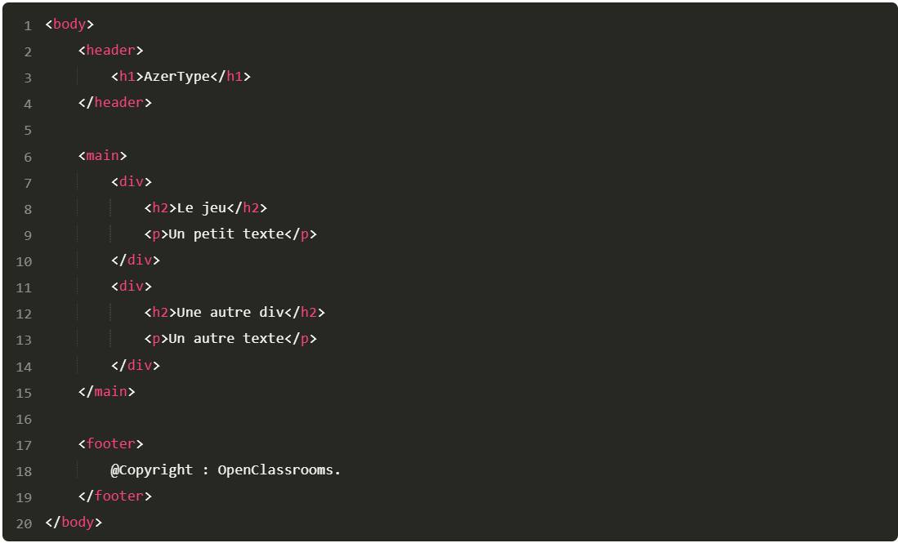
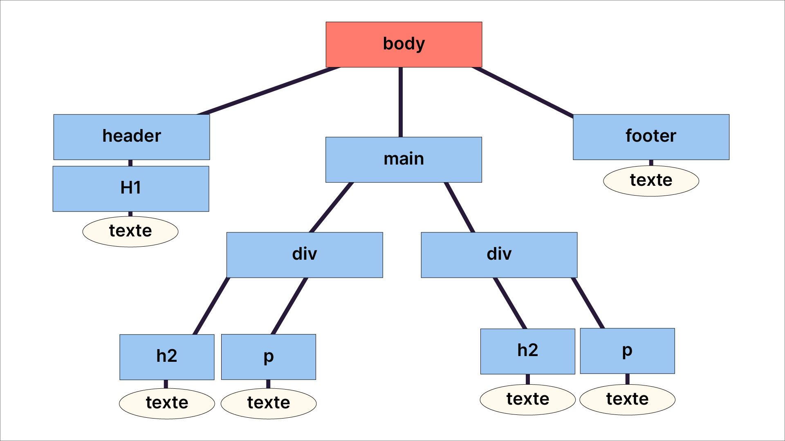
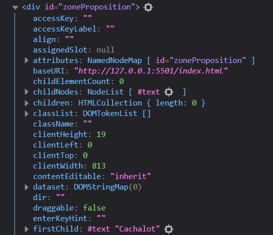
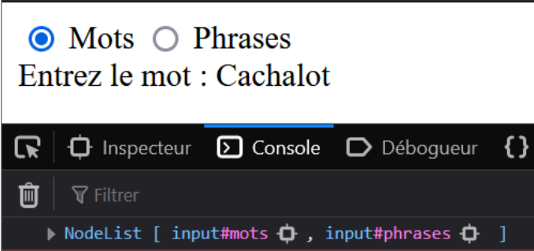
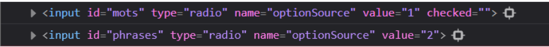

Dans la partie précédente, nous avons découvert la logique de programmation en JavaScript, et nous avons manipulé des structures conditionnelles, des boucles et des fonctions. Nous avons fait une belle partie du chemin, mais pour l’instant, nous nous sommes contentés d’écrire dans la console. Notre prochaine étape est donc de manipuler directement une page HTML pour la rendre interactive. Dans le cadre de notre application Azertype, cela permettra d’afficher en HTML les mots à recopier et le score.
Pour appréhender cette étape, vous devez donc maîtriser les fondamentaux du langage HTML. Si ce n’est pas le cas, je vous conseille fortement de suivre le coursCréez votre site web avec HTML 5 et CSS 3.
Notre première étape, dans ce chapitre, est d’établir un lien entre le code HTML et le code JavaScript. Cela nous permettra, dans le chapitre suivant, de modifier le code HTML directement depuis notre code JavaScript. Alors, avant de rentrer dans le vif du sujet, regardons ensemble comment une page web est structurée ! 😉
Généralement, une page web est constituée de deux parties :
Voici un exemple de body pour une page simple :
Ce code HTML est simple. Il est constitué d’un header avec un titre, d’un corps (main) et d’un footer.
Ce code est un peu structuré comme un arbre, c’est pourquoi on appelle cette structure l’arbre DOM (Document Object Model, ou modèle objet du document, en français). En fait, JavaScript ne lit pas une page HTML comme du simple texte. Il la représente comme une structure organisée en parents/enfants, et composée de nœuds qui représentent des balises.
Ouh là là là, ça devient un peu abstrait ton truc, là… 😅
C’est un peu imagé oui, mais revenons ensemble sur l’illustration de l’arbre DOM ci-dessous :
Dans la structure ci-dessus :
En développement informatique, on dit que header, main et footer sont les noeuds enfants de body, et que body est le parent de ces nœuds.
Chaque nœud de cet arbre DOM (header, main, div…) est un objet HTMLElement. Pour le dire autrement, JavaScript a regroupé dans un même objet deux choses :
Dans ce cours, nous explorons plusieurs propriétés et méthodes, mais il en existe d’autres. Si vous voulez en savoir plus, la documentation est à votre disposition. 😃
Dans ce chapitre, notre but est de récupérer certains éléments de l’arbre DOM, qui a pour racine la balise body. Cependant, vous vous souvenez peut-être que nos fichiers JavaScript sont stockés dans la balise head, qui se situe avant le body.
Pour manipuler le DOM, JavaScript doit ainsi construire une variable globale,
document, qui est donc accessible
depuis
n’importe où dans notre code.
Cependant, pour construire cette variable, la page HTML doit être chargée
en
entier. Or,
le script étant lancé dans la balise head, avant que le body ne s’affiche à l’écran, la page HTML n’existe
pas
encore.
Nous devons donc attendre que la page ait fini de charger avant d’utiliser la variable document.
Pour résoudre ce problème, la méthode la plus efficace est d’ ajouter le mot-clé defer dans la balise script. Concrètement, cela revient à demander au navigateur “Si tu rencontres la balise script, diffère sa prise en compte et attends que la page soit chargée.” (cf : applicationAzertyType)
JavaScript propose tout un éventail de méthodes pour récupérer les éléments du DOM. Dans ce chapitre, nous en aborderons trois :
Il existe bien sûr d’autres méthodes, et je vous invite d’ailleurs à les découvrir par vous-même. L’essentiel est
de
choisir la méthode la plus adaptée à la problématique suivante :
cibler le ou les éléments qui nous intéressent
au
milieu d’une page HTML souvent très conséquente.
La première méthode, et probablement la plus simple, est getElementById. Comme son nom l’indique, elle permet de récupérer un élément en fournissant son id en paramètre.
Dans notre application par exemple, nous affichions jusqu’à maintenant le mot à recopier dans le texte du prompt. Désormais, notre objectif est de l’afficher dans une zone de la page dédiée.
Pour cela, nous pouvons commencer par créer une div dans le HTML. Pour la distinguer des autres, nous lui fournissons un id : (cf : applicationAzertyType)
Pour accéder à cette balise, nous allons donc écrire : (cf : script2.js)
Ici, nous avons demandé à JavaScript, depuis document, donc toute la page :
“Trouve-moi un élément HTML qui a
pour id
zoneProposition”. Puis nous avons mis le résultat dans la variable baliseZoneProposition.
Quand nous faisons un console.log de cette variable, nous constatons bien le contenu de notre
variable
baliseZoneProposition, et nous retrouvons bien notre div :
Cette variable est un objet de type HTMLElement. Si nous cliquons sur le petit triangle à côté de cette div pour déployer le contenu, les détails de cet objet HTMLElement vont s’afficher, comme dans la capture d’écran ci-dessous.
Ah oui…. Ca fait beaucoup d'informations, tout ça !
Eh oui… JavaScript propose beaucoup de propriétés et de méthodes sur les objets HTLMElement. Pour vous, ce sont
autant
d’opportunités d’aller les piocher en fonction de vos besoins !
Enfin, comme pour n’importe quel objet en JavaScript, vous pouvez accéder aux propriétés de votre nœud
grâce au
point
“.” .
Par exemple, pour afficher la hauteur de l’élément dans votre console, vous pouvez écrire :
Lorsqu’on a un id sur nos éléments, document.getElementById est une bonne option pour les récupérer. Malheureusement, il arrive régulièrement que ça ne soit pas le cas !
JavaScript a donné une réponse particulièrement intuitive à ce problème : utiliser les sélecteurs CSS. En gros, si vous savez désigner un élément en CSS, alors il vous suffit de reprendre exactement la même syntaxe ! 😃
Modifions légèrement le contenu de notre page HTML pour illustrer cela : (cf : applicationAzertyType)
Pour mettre le mot Cachalot en gras en CSS, nous aurions écrit :
#zoneProposition span {
font-weight: bold;
}
Ce code signifie : “Il faut mettre la police d’écriture en gras pour tous les span contenus dans un élément qui a l’id zoneProposition.”
querySelector nous permet de trouver le premier élément qui correspond au sélecteur CSS proposé : (cf : script2.js)
Et voilà le résultat ci-dessus : nous voyons dans la console que nous avons bien trouvé notre span.
Notez que # est présent devant l’id, comme on l’écrirait en CSS, alors que ce # n’était pas nécessaire avec getElementById.
Ici, le principe est le même que pour tous les éléments dans une liste de type NodeList (ou liste de nœuds, en français).
Modifions à nouveau notre body : (cf : applicationAzertyType)
Dans ce code, j’ai ajouté une nouvelle div avec la classe zoneChoix. Cette div
contient deux inputs de type
radio.
Pour récupérer tous les inputs de type radio d’un seul coup, je peux donc
écrire : (cf : script2.js)
Et voici le résultat : nous obtenons une NodeList.
Nous voyons bien ici notre NodeList. Pour reprendre l’image de l’arbre DOM, JavaScript a sélectionné dans cet arbre les nœuds qui correspondent à notre sélecteur CSS.
Nous allons devoir parcourir les différents éléments de cette liste un par un pour y accéder. Nous utiliserons donc une boucle : (cf : script2.js)
Et voilà le résultat, nous retrouvons bien le détail de tous nos éléments :
